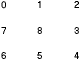

Menu G5 Step-by-step: Position a menu instance
Menu G5 supports three different ways of menu positioning:
Absolute positioning is straightforward, you give the coordinates and the menu will be happy to sit right there. For example, [click here] to show a little box at [10,10], and [click here] to show a menu positioned at [10,10]. The menu is given some transparent effect to show how the menu is overlapping the little box at [10,10].
As you might remember, we defined a menu instance with the following call:
addInstance("Demo1", "Demo", "...");
Well, that's the simplest case and all the configurable parameters, such as positioning, offset, menu layout, menu direction, menu alignment, floating, etc, will all take the default values. It's now time to reveal some.
To define the position of a menu instance, we use the following parameter phrases in the addInstance() call:
addInstance("Demo1", "Demo", "position:absolute; offset-top:10; offset-left:10; ...");
The "position:absolute" phrase tells that the menu instance will be positioned with some coordinates, which are specified by the phrases of "offset-top:10" and "offset-left:10".
The absolute positioning is the default positioning method, so you only need to specify the "offset-top:" and "offset-left:" phrases, and if they are also missing, [0,0] would be taken.
The "visibility:hidden" phrase here specifies that the menu instance would remain hidden after it collapses, good for setting up a popup menu.
For relative positioning, you'll need to set up a place holder for the menu instance by defining the ID property for some html element, such as a SPAN or a DIV element, the menu instance then takes the coordinates of the top-left corner of the place holder to position itself.
For example, below we have a centralized table with one cell only:
and the TD cell is given an ID "holder". The html codes for the above line would be like this:
<table align="center" cellpadding="0" cellspacing="0" border="0"> <tr><td id="holder"> </td></tr> </table>
To place the menu instance against such a place holder, we would use something like this:
addInstance("Demo2", "Demo", "position:relative holder; ...");
You can [click here] to show the menu instance. The "offset-top:" and "offset-left:" phrases will now specify the offset away from the place holder, by default is [0,0] if not specified.
Note: When you put a place holder inside a table cell, you should set the border of the table and of all the parent tables to 0 (zero). Otherwise Menu G5 might mistake the position of the place holder by a few pixels.
Update for IE/Mac: In pre-5.5.0 menu pages, a centralized holder can be set up as:
<div align="center"><span id="holder"> </span></div>
Somehow the codes used to calculate the position of such a holder doesn't seem to be getting the correct coordinates in IE/Mac. Using of TABLE for relative positioning is recommended.
For pre-defined slots, Menu G5 has set up 9 slots around the edge of the browser window, as what the numbers in the chart to the right are indicating. Like absolute positioning, you don't need to set up anything in the page but just pick one of the slots for the menu instance, for example slot 6:
addInstance("Demo4", "Demo", "position:slot 6; align:left; valign:bottom; direction:right-up; floating:yes; ...");
You can [click here] to show the menu instance, watch it floats when you are scrolling the page.
You might notice that we use some new parameter phrases in the slot example, such as:
align:left
... this will align the left side of the top-menu pad to the referenced x-coordinate (of the absolute coordinates, the top-left corner of a place holder, or a slot).
valign:bottom
... this will align the bottom of the top-menu pad to the referenced y-coordinates.
direction:right-up
... this will open the sub-menus to the right-up direction.
floating:yes
... this will have the menu stay in the same spot while the page is scrolling.
With the "align:" and "valign:" phrases, it's easy to have a centralized menu bar:
As you could guess, we set up a centralized one-cell table as a holder (the little rex box in the middle) and use the "align:center" phrase in the addInstance() call:
addInstance("Demo5", "Demo", "position:relative holder3; align:center; menu-form:bar; ...");
The "menu-form:bar" phrase here makes the top-menu of the menu instance to layout as a menu bar.
Well, I think one of these 3 positioning methods should be able to find a seat for your menu, and so far, you've seen most of the syntax and some frequently used techniques in Menu G5. More details and tricks can be found in the coming Menu G5 examples and documents.
[Cross-Frame menus] [Back to index page]
# # #